Analyzing incarceration rates & socio-economic survey variables by U.S. counties
Author
Diego Flores
Published
April 1, 2024
This study is a look at the relationship between common household, socio-economic indicators and rates of incarceration at the county level in the United States in 2016. Specifically, this study seeks to answer these questions:
Why do some counties have higher incarceration rates? What socio-economic indicators predict higher incarceration rates?
With this question in mind, incarceration rates are defined as the total jail population rates and total prison population rates in the US in 2016 at the county level. In this study, incarceration is not defined as the sum of jail and prison rates instead they are treated as two separate dependent variables. This is done because of the possibility of difference in outcomes and relationships between jail and prison rates and the independent variables. Specifically, certain predictors may be more important in predicting prison or jail rates due to significant differences between the two institutions.
Data Sources
Vera Incarceration Trends database & American Community Survey (ACS). Both of these data sets are publicly available see links here: link & link
Variables with more than 30% of missing values are dropped using the code below. It is not a great idea to impute on high NA variables because of the lack of reliability in imputing reliable data, since there is so little pre-existing data to base the imputation on.
Click to show code
# basic function to show % of NA values per variable pmiss <-function(x){ sum(is.na(x))/length(x)*100 }na_percent <-apply(incarceration, 2, pmiss) #apply to df, 2 = rows, pmiss functionprint(na_percent) # check ### Remove columns w/ high % missing ###threshold <-30#set threshold cols_to_rm <-names(na_percent[na_percent > threshold]) #print(cols_to_rm) #8 columns exceed 30% thresholdincarceration <- incarceration[, !(names(incarceration) #only the cols not(!) listed in cols_to_rm kept%in% cols_to_rm)] #18 variables now
Multiple Imputation for missing data using MICE
Now that columns with high N/A values are removed, the missing data is imputed using a straightforward multiple imputation. After imputing, the data is checked for missing values.
Click to show code
####MICE####predictor_matrix <- mice::make.predictorMatrix(incarceration_num2)# Identify the position of 'FIPS' columnfips_col <-which(names(incarceration_num2) =="fips")# Set fips column in predictor matrix to 0, excludes from being used in imputationpredictor_matrix[fips_col, ] <-0predictor_matrix[, fips_col] <-0incarceration_mice <-mice(incarceration_num2,m=5, #m=5, number of imputationsmeth='pmm', print =FALSE) #method pmmsummary(incarceration_mice)
Imputation diagnostic checks
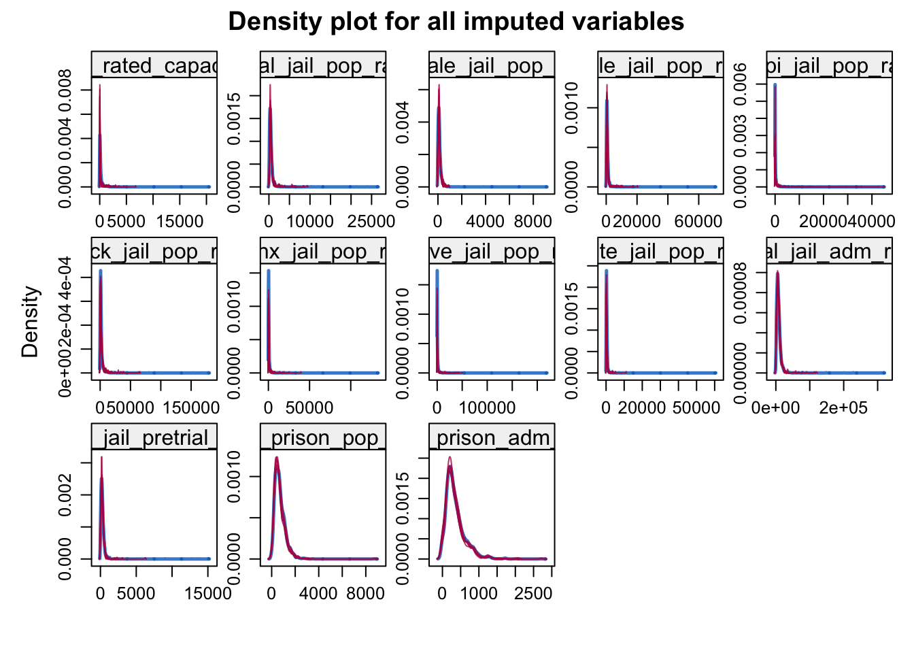
Click to show code
densityplot(incarceration_mice, # dist. lines are similar, meaning imputed data are consistent among ~total_jail_pop_rate, # observed and imputed data xlim =c(0, 5000), main ="Imputed distribution (red) against original distribution (blue)")
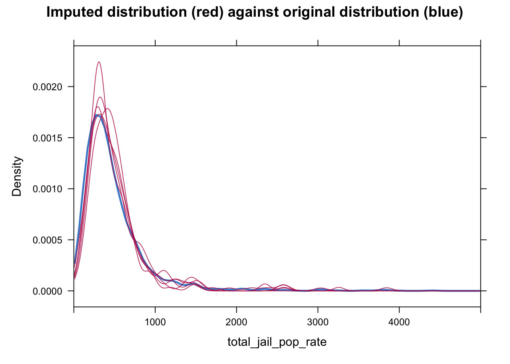
The distribution of the imputed and observed are similar. Distributional similarity is important despite the possibility of the model not fitting the data well.
Loading & Wrangling ACS Data
There is approximately 8676 NA values in the untouched ACS dataset, about half of which are Margin of error estimate values. For the sake of simplicity, these values are removed but remain an important source for statistical testing if needed.
[1] 4032.258
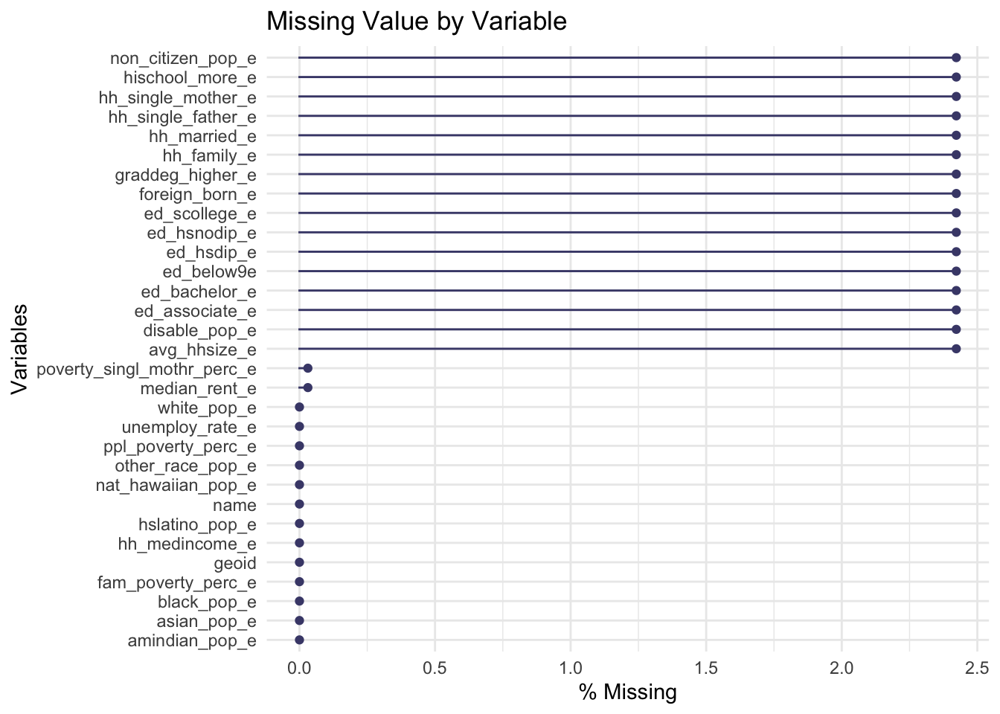
After removing margin of error values approximately 2.4% of data is missing in numerous variables, suggesting the values are missing not at random (MNAR), that is, the Na values observe a pattern. This is further visualized by the black strip of missing data in the figure below
Click to show code
vis_miss(acs16, sort_miss =TRUE)
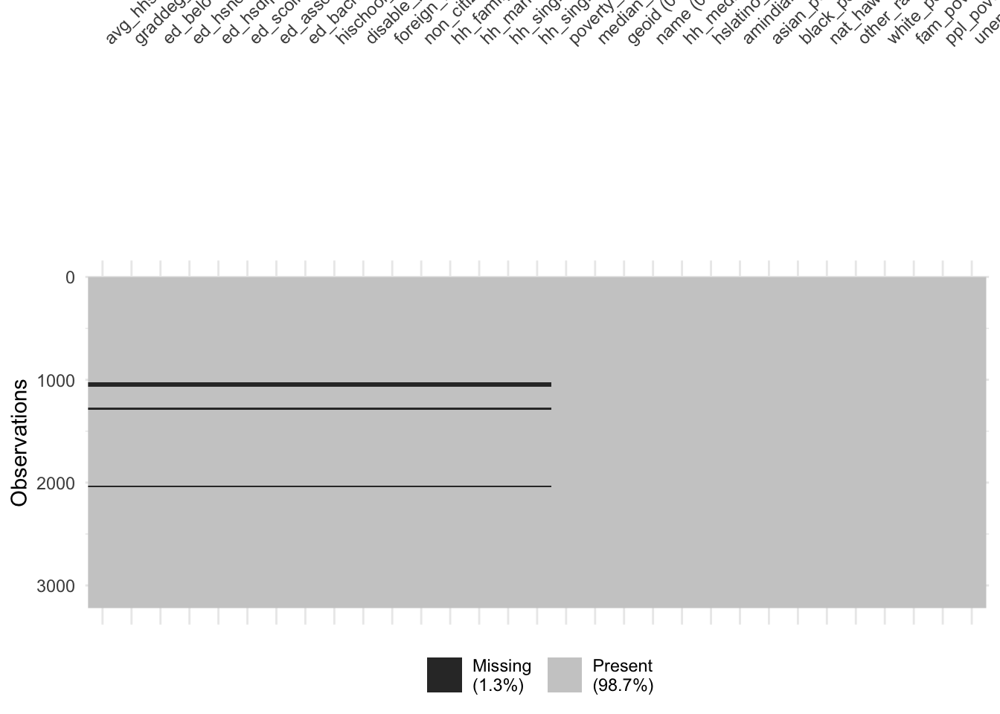
At this point the incarceration data set has zero NA’s but ACS data observes a structured NA pattern. What exactly are these NA’s? To deal with this I took an anti_join approach (by FIPS) to see what counties from the ACS data don’t have a corresponding value in the incarceration trends data set.
Before the anti_join, the FIPS columns in the incarceration data frame must be standardized to 5 digits since some values only have 4 FIPS digits. To solve this, a leading zero was added to the 4 digit FIPS columns using an ifelse logical within the mutate function.
Click to show code
incarceration16 <- incarceration16 %>%# Add leading zero to FIPS w only 4 numbers for consistent mutate(fips =ifelse(nchar(fips) ==4, # FIPS id across both dataframes paste0("0", fips), fips)) #if # of chr == 4 paste 0 to fips, else leave fipsacs16 <- acs16 %>%rename(fips = geoid) #rename ACS geoid column to fips # Asses which values do not match among both dfsincarceration_acs_temp <-anti_join(acs16, incarceration16, by ="fips") # 82 rows do not match
As mentioned, creating an anti join data frame allows one to see the columns without a corresponding FIPS id in the incarceration dataframe. By doing so it was evident that when calling ACS data through the census API key, data on Puerto Rico was extracted. For the variables requested (e.g. average household size, education, etc.) there was no available data on Puerto Rico, hence the missing data pattern observed earlier. These are removed below.
Click to show code
acs16 <- acs16 %>%filter(!str_detect(name, "Puerto Rico")) # filter rows where string is present in col name, logical# operator ! negates the initial detection sum(duplicated(acs16$fips)) sum(duplicated(incarceration$fips)) # 0 duplicates in both dfs
From the anti join approach, there was a major discrepancy noticed: the incarceration data frame aggregates the five borough of New York City into one “New York County,” while ACS data measures all five boroughs separately. Due to the size of these boroughs it is important to aggregate them instead of dropping them since doing so will lead to missing out on a valuable data point.
Click to show code
boroughs <- acs16 %>%filter(fips %in%c(36005, # Join NY boroughs into one county -- replicate36047, 36061, 36081, 36085)) # incarceration16# Aggregate columns, due to different types of obsv must summarise each group of cols diffraw_columns <-c(4:10, 12:14, 16:26) # Raw columnsmedian_columns <-c(15, 31) # Median columnsperc_avg_columns <-c(3, 11, 27:30) # Percent average columns ny_aggregate <- boroughs %>%# Summarize the data framesummarise(across(all_of(raw_columns), sum),across(all_of(median_columns), median),across(all_of(perc_avg_columns), mean))print(ny_aggregate)#aggregate the sumarised rows into one ny county ny_aggregate <- ny_aggregate %>%mutate(fips =36061, name ="New York County")ny_aggregate <- ny_aggregate %>%#reorder columns! select(fips, name, everything()) %>%mutate(fips =as.character(fips),name ="New York County")# remove the 5 boroughs from acs 16acs16 <- acs16 %>%filter(!fips %in%c(36005,36047, 36061, 36081, 36085))acs16 <-bind_rows(acs16, ny_aggregate)
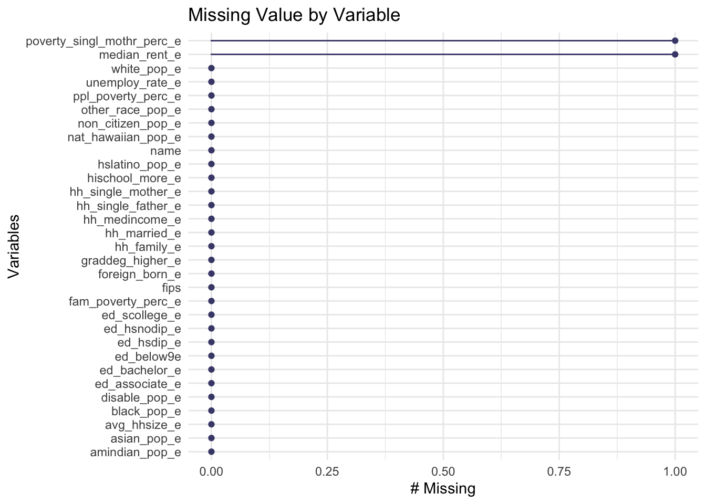
An alternative approach is to use a complete cases function like below. This also retrieves rows with missing values and allows us to see how Peurto Rico observations are driving the presence of Na values.
Click to show code
narow <- acs16[!complete.cases(acs16),] #acs16 w/ in the df look 4 complete cases in all rows, but negated so it will get the not complete cases (NAs)print(narow)
Merging both data sets
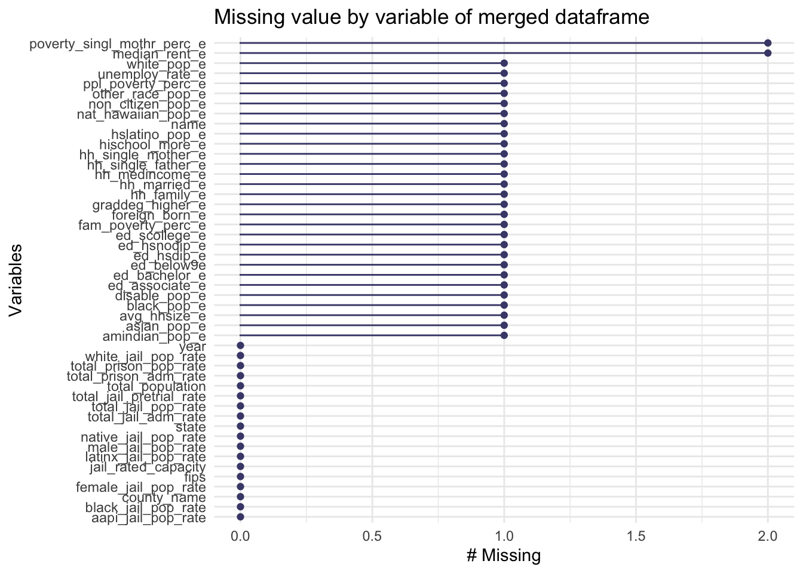
Click to show code
naperc <-apply(incarceration_acs16, 2, pmiss) #apply to df, 2 = cols, pmiss functionprint(naperc) # 0 NA now
There are very few NA values now that are subsequently dropped
Below, the education variables from the ACS survey are aggregated into a city human capital index (CHCI) using a basic function.
Click to show code
chciindex <-function(data_frame) { #takes a data_frame as input, returns newly calc variable chci <- ((50* data_frame$ed_below9e +100*data_frame$ed_hsnodip_e +# assigning new variable chci 120*data_frame$ed_hsdip_e +130* data_frame$ed_scollege_e +140* data_frame$ed_associate_e +190*data_frame$ed_bachelor_e +#must specify to look into a df, find these vars230*data_frame$graddeg_higher_e))/100# named variables, hence 'df$variable name'return(chci)}
Visualizing jail and prison population rates in the U.S. by county
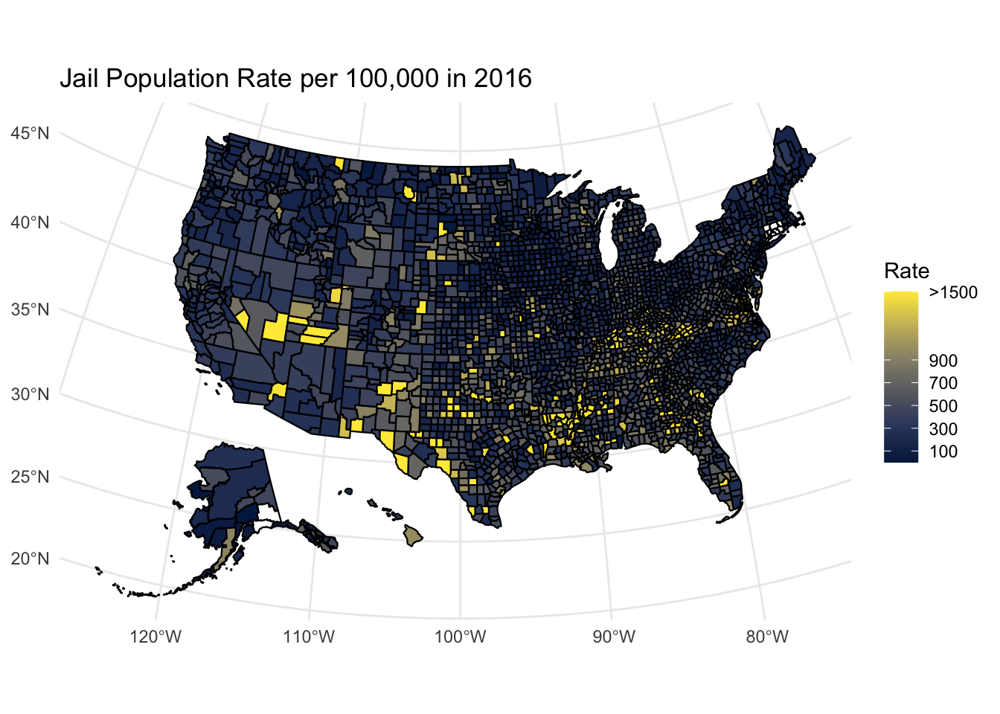
Yellow counties are those with the highest rates of incarceration and demonstrate a staggering picture of the incarceration landscape in the US. In these counties, for every 100,000 people, there are approximately 1,500 people behind bars in some capacity. When it comes to high jail population rates, these areas are disproportionately concentrated in the state of Colorado, Texas, and Kentucky and Louisiana, to name a few. As for prison rates the landscape is noticeably different but still concentrated in large swaths of the South, Southwest, and Southeastern United States.
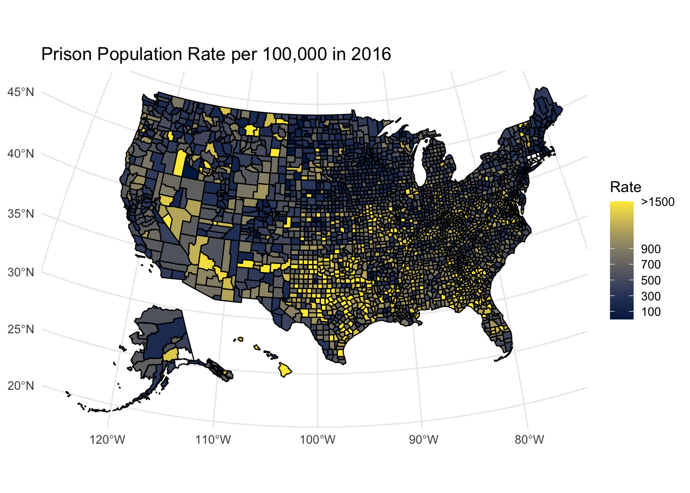
To properly visualize relationships among variables of interest, outliers are removed using a straightforward IQR upper and lower bound method. Approximately 700 observations are removed from the original 3139 observations.
Click to show code
#data set no outliers!! incacs16 <-remove_outliers_df(incarceration_acs16)str(incacs16) # removed 700 outliers
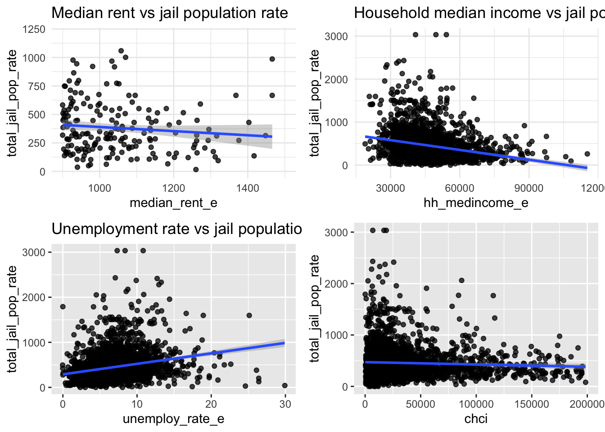
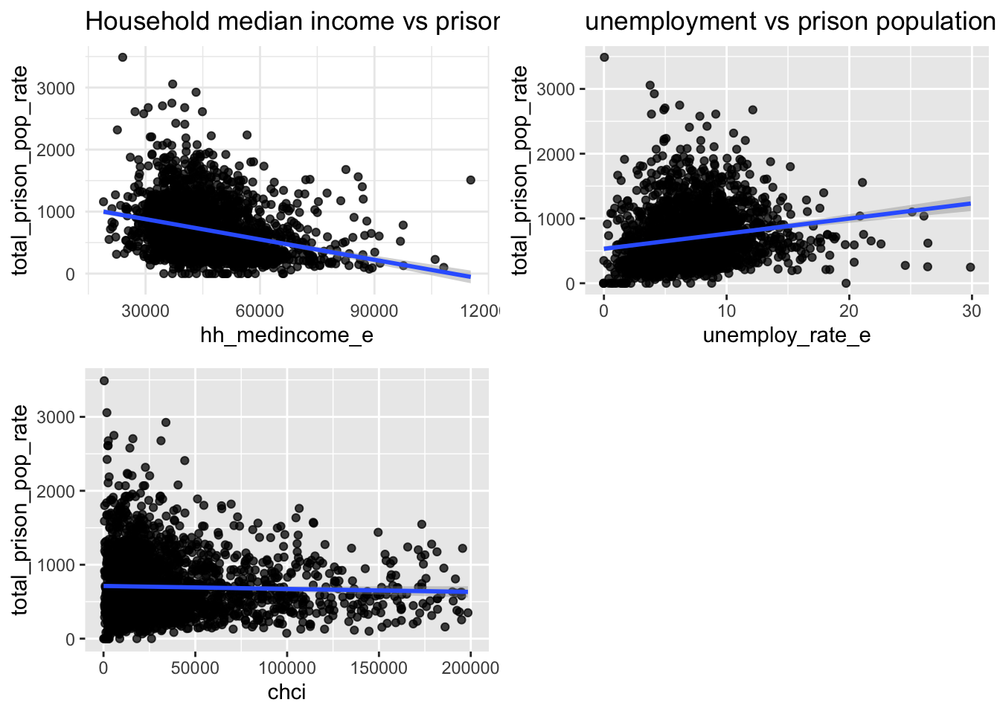
We can see above the correlation between common socio-economic indicators, such as median household income, city human capital index, and unemployment rate.
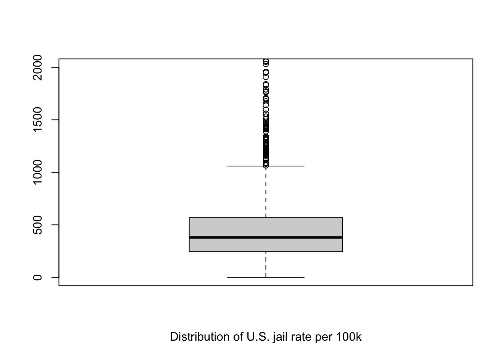
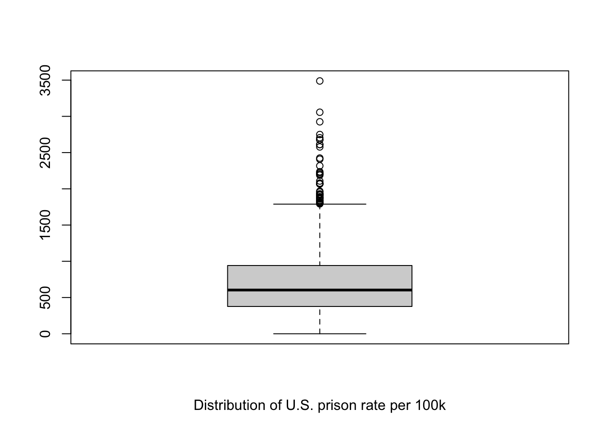
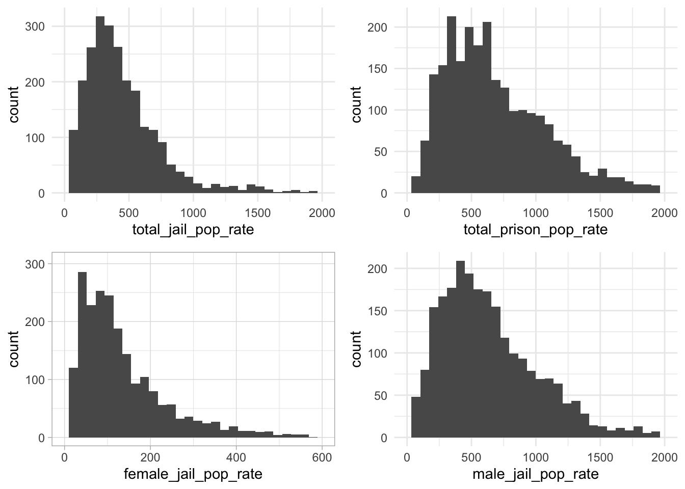
Model I: Multiple regression
Below are the two regression outputs for the socio-economic predictor variables regressed on the dependent variables jail population rate and prison population rate, respectively.
Regression Results
Dependent variable:
Total Jail Population Rate
(1)
(2)
(3)
(4)
Unemployment rate
1.384
4.446*
0.016
3.964
(2.718)
(2.615)
(2.762)
(2.658)
Median Rent
0.355***
0.020
0.386***
0.023
(0.066)
(0.070)
(0.068)
(0.072)
Poverty single mother
-0.727
-0.422
-1.004
-0.497
(0.753)
(0.668)
(0.755)
(0.670)
Poverty all people
8.884***
1.432
11.023***
2.130
(2.124)
(1.973)
(2.191)
(2.043)
Household single mother
0.078***
0.053***
0.067***
0.042**
(0.012)
(0.012)
(0.022)
(0.020)
Household single father
-0.030
0.019
-0.047
0.022
(0.037)
(0.034)
(0.041)
(0.038)
Household married
0.017**
-0.005
(0.007)
(0.007)
Native Hawaiian
-0.136
-0.007
(0.087)
(0.081)
Black
0.001
0.001
(0.002)
(0.002)
Asian
-0.017
-0.028**
(0.012)
(0.011)
American Indian
-0.011*
-0.002
(0.006)
(0.007)
Hispanic
0.001
0.002
(0.003)
(0.003)
Household median income
-0.005***
-0.004***
-0.004***
-0.004***
(0.001)
(0.001)
(0.001)
(0.001)
Non citizen population
-0.022
-0.009
-0.035**
-0.018
(0.017)
(0.016)
(0.018)
(0.017)
Foreign born
0.015
0.006
0.027**
0.013
(0.012)
(0.011)
(0.013)
(0.013)
Disabled population
0.007
-0.001
(0.005)
(0.005)
CHCI
-0.004***
-0.003***
-0.007***
-0.001
(0.001)
(0.001)
(0.002)
(0.002)
as.factor(state)AL
127.446*
104.342
(72.511)
(76.140)
as.factor(state)AR
as.factor(state)WV
33.239
(75.645)
as.factor(state)WY
74.809
(94.748)
Constant
322.580***
488.286***
251.107***
491.337***
(70.668)
(101.155)
(74.645)
(104.193)
Observations
2,438
2,438
2,438
2,438
R2
0.123
0.346
0.132
0.348
Adjusted R2
0.120
0.330
0.126
0.331
Residual Std. Error
310.253 (df = 2427)
270.703 (df = 2379)
309.197 (df = 2420)
270.528 (df = 2372)
F Statistic
34.086*** (df = 10; 2427)
21.668*** (df = 58; 2379)
21.576*** (df = 17; 2420)
19.514*** (df = 65; 2372)
Note:
p<0.1; p<0.05; p<0.01
Regression Results
Dependent variable:
Total Prison Population Rate
(1)
(2)
(3)
Unemployment rate
-10.581***
-8.423**
-9.382***
(3.517)
(3.350)
(3.406)
Median Rent
0.431***
0.113
0.108
(0.085)
(0.090)
(0.092)
Poverty single mother
0.039
-0.778
-0.746
(0.975)
(0.856)
(0.859)
Poverty all people
10.584***
4.325*
4.292
(2.748)
(2.527)
(2.618)
Household single mother
0.098***
0.075***
0.073***
(0.016)
(0.015)
(0.026)
Household single father
-0.042
0.033
0.026
(0.047)
(0.044)
(0.049)
Household married
-0.005
(0.009)
Native Hawaiian
-0.018
(0.104)
Black
-0.0002
(0.003)
Asian
-0.021
(0.014)
American Indian
0.018**
(0.009)
Hispanic
-0.005
(0.004)
Household median income
-0.010***
-0.008***
-0.007***
(0.002)
(0.002)
(0.002)
Non citizen population
-0.021
-0.010
-0.015
(0.022)
(0.021)
(0.021)
Foreign born
0.019
-0.001
0.014
(0.015)
(0.015)
(0.016)
Disable
0.004
(0.006)
CHCI
-0.004***
-0.003***
-0.003
(0.001)
(0.001)
(0.002)
as.factor(state)AL
-32.043
16.331
(92.891)
(97.572)
as.factor(state)AR
as.factor(state)WV
129.046
(96.938)
as.factor(state)WY
-10.950
(121.418)
Constant
749.762***
963.528***
895.483***
(91.434)
(129.586)
(133.522)
Observations
2,438
2,438
2,438
R2
0.125
0.360
0.362
Adjusted R2
0.121
0.344
0.344
Residual Std. Error
401.420 (df = 2427)
346.786 (df = 2379)
346.678 (df = 2372)
F Statistic
34.541*** (df = 10; 2427)
23.031*** (df = 58; 2379)
20.694*** (df = 65; 2372)
Note:
p<0.1; p<0.05; p<0.01
Experimenting with non-linear models and predictive analyses
Random Forest Model
Upon splitting data into training and testing sets, the random forest model can now be run on the training data set. Results are below.
Evaluating the Model: Predicting on test data, Mean squared error (MSE), and R Squared
Click to show code
impmse <-ggplot(impdf, aes(x =reorder(Variables, `%IncMSE`), y =`%IncMSE`)) +geom_bar(stat ="identity", fill ="steelblue") +coord_flip() +labs(title ="Variable Importance Plot",x ="Variables",y ="% increase in Mean Squared error") +theme_minimal(base_size =10) +theme(plot.title =element_text(hjust =0.5, size =12, face ="bold"),axis.title =element_text(size =10),axis.text =element_text(size =8))
Here is a partial importance plot to assess the marginal effect (importance) of a given variable, i.e. the percent of families who fall below the poverty threshold, on jail population rates. From the plot one can see the positive relationship between the two variables, signalling that as the percent of families facing poverty increases, jail population rate similarly increases in the model.
The small ticks on the x axis show the observed distribution of points for the predictor variable. This helps in understanding the range and density of the predictor values.